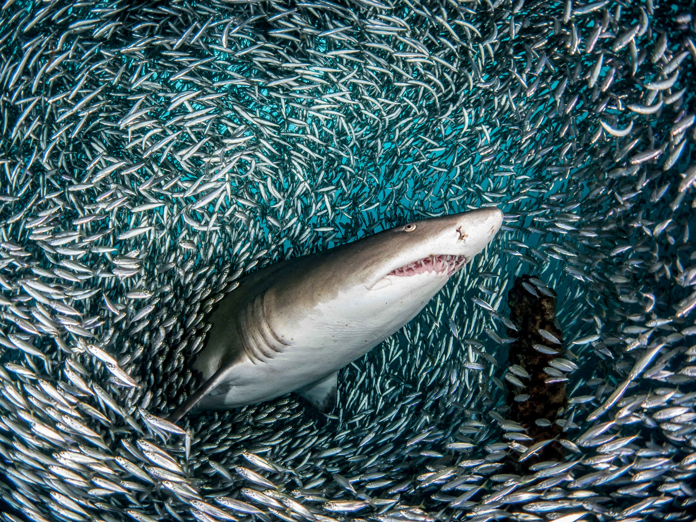

| 🦈 ● Sharks are more important for the ecosystem than you think - they're vital |
| Sharks are the apex predators in marine ecosystems, which means they have few natural predators and feed on animals below them in the food web. Sharks limit the abundance of their prey, which then affects the prey of those animals, and so on throughout the food web.
 ⇧ Interestingly, in the picture above, the sand tiger shark isn't eating the fish it's swimming into. It's actually swimming through them in search of bigger fish. If sharks are taken out of the coral reef ecosystem, larger predatory fish increase rapidly and feed on prey, herbivores. Lesser herbivores increases the amount of algae and coral can no longer be the main food provider of the food web, affecting the survival of the coral reef system. |
| 🦈 ● More sharks, healthier oceans |
| Sharks support healthy seagrass by scaring consumers who feed on the seagrass. Seagrass absorbs a lot of carbon and store it, hence more sharks means more seagrass to store more carbon, reducing the amount of carbon in the waters. |